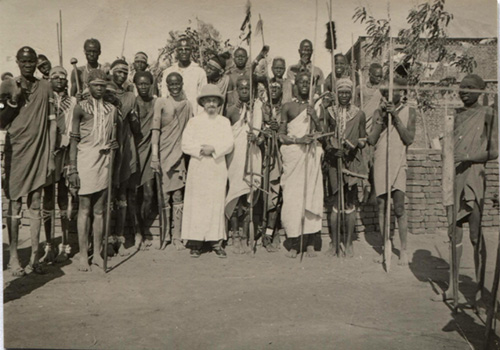

Nato a S. Cassiano nel 1884, nel 1900 entrò a Milland, Bressanone, dove fece la sua professione perpetua nel 1902 e fu ordinato sacerdote nel 1907. Un anno dopo fu mandato a Khartoum e iniziò tutta una vita d'incondizionato servizio ai popoli dell'alto Nilo, nella cui lingua ed etnologia divenne un'autorità incontestata.
Il 30 marzo del 1910 raggiungeva, con P. Cordone e i Fratelli Clemente e Benedetto, il P. Albino Colombaroli che aveva appena aperto con Mons. Geyer la prima missione dell'Uganda ad Omach tra gli Alur. L'anno seguente passò a Gulu nel distretto Acholi; nel 1914 a Lull tra i Nuer del Sudan. Prigioniero di guerra in Egitto dal 1916 al 1919, ritornò tra i Nuer nel 1920. Nel 1932 s'ammalò. I superiori lo invitarono ad andare al Cairo per alcuni mesi. Nella capitale egiziana incontrò il prof. Evans-Pritchard, celebre studioso di alcune popolazioni del Sudan meridionale, che gli consigliò un corso di perfezionamento a Oxford, in glottologia. Dopo un soggiorno d'alcuni mesi a Vienna, passò infatti a Londra, alla scuola del prof. Seligman.
Lavorò in molte stazioni del Sudan e dell'Uganda e specialmente nei distretti Acholi e West Nile. Oltre alle grammatiche Nuer, Acholi e Logbara, e molti articoli su riviste e giornali, scrisse “The Lwoo”, in inglese, in tre volumi, senz'altro un capolavoro, il risultato di una vita spesa nello studio di quei popoli al cui bene s'era completamente dedicato.
Nel 1963, nel compleanno della Regina Elisabetta ricevette l'M.B.E. onorario; nel 1965 la Royal African Society lo nominava membro onorario e nel gennaio di quest'anno, il Presidente Leone lo faceva Commendatore nell'Ordine al merito della Repubblica Italiana. Tra i suoi vecchi alunni ci sono alcune delle personalità, vive o defunte, più prominenti d'Uganda.
P. Pasquale morì a S. Cassiano in Val Badia (Bolzano) il 25 marzo. Mancavano pochi giorni al suo 92° compleanno.
Tra i suoi lavori più importanti: The Lwoo I. Migrations, Mus. Comb. No.3. 1950. The Lwoo II. Clans, Mus. Comb. No.6, 1951. The Lwoo III . Traditions, Mus. Comb. No. 8, 1954. Outlines of a Nuer Grammar, ediz. Anthropos, Vienna 1953. A Study of the Acooli Language, International African Institute, 1955. A Study of the Logbara (Ma'di) Language - Grammar and Vocabulary, Inter. Afr. Inst. Londra, 1960. A Study of the Pokot (Suk) Language Editrice Missionaria Italiana, 1978.
